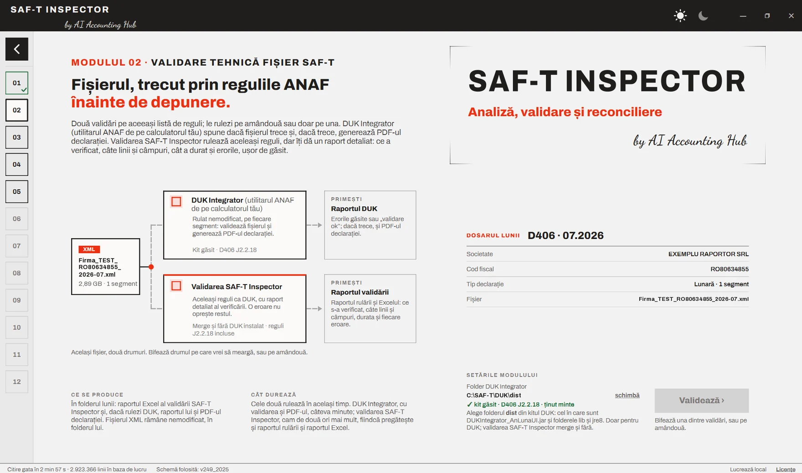
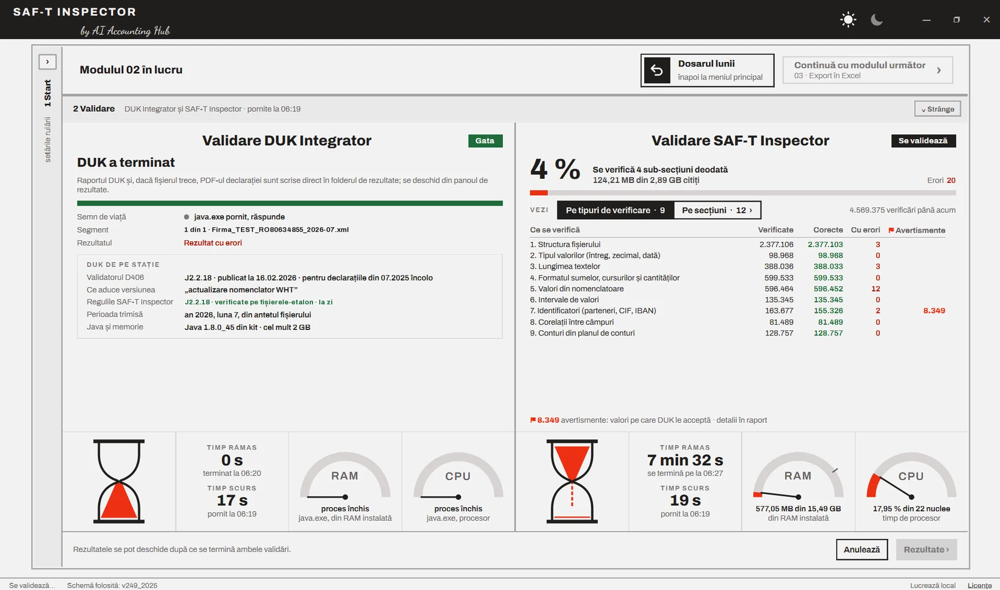

DUK Integrator: aceleași reguli, alt raport
La începutul proiectului SAF-T Inspector am pornit cu ideea să lăsăm validarea fișierului D406 în seama DUK Integrator. Pe parcurs am înțeles că tocmai acolo se decide dacă tot ce urmează are sens, și cât de puțin spune DUK despre ce face. Așa a apărut o validare proprie, rulată în paralel cu DUK: aceleași reguli, dar cu un raport complet și detaliat, pe care îl poate citi un contabil, în locul unui mesaj sec. Tot ce am documentat pe drum e aici, liber, ca fiecare să-și poată construi propria verificare SAF-T, potrivită nevoilor lui. La final găsiți harta celor 1.863 de reguli cu referință publică, de descărcat.
Seria SAF-Tpartea a noua ce a fost înainte
- Două aplicații ANAF pentru SAF-T: pași corecți, dar timizi27 august 2026 · 12 min
- Cinci ani de SAF-T în România: de la standardul OCDE la declarația D40629 august 2026 · 17 min
- Cum verifici fișierul SAF-T D406 înainte de depunere30 august 2026 · 22 min
- Nu cere drumul cel mai scurt5 septembrie 2026 · 12 min
- Proiectul care ține minte5 septembrie 2026 · 12 min
- Conversația care nu a produs cod8 septembrie 2026 · 13 min
- Ultimul pas înainte de cod15 septembrie 2026 · 12 min
- Apeși Verifică, și D406 devine Excel28 septembrie 2026 · 15 min
// Cuprins

Am pornit cu „lăsăm DUK ce-i al lui”
În august, când am scris despre verificarea D406 înainte de depunere, primul capitol se numea „In DUK we trust”. Așa am și pornit construcția. Când am ales numele aplicației, „Validator” a ieșit repede din listă. Motivul era simplu: validarea fișierului pe schemă o face deja ANAF, cu DUK Integrator. Eu urma să mă ocup de ce vine după, adică testele de consistență, reconcilierea cu D300, D394 și balanța, analiza datelor.
Decizia părea rezonabilă. DUK e validatorul oficial, iar fișierul trebuie oricum să treacă de el înainte de depunere. De ce să refaci ceva ce există deja?
Ce m-a făcut să mă răzgândesc
Ca să construiești o aplicație care citește D406, trebuie să știi exact ce înseamnă fiecare câmp, ce valori poate avea și cum se leagă de celelalte. Am citit SchemaDefCod, schema XSD, ghidul D406 și cele două documente de întrebări și răspunsuri ale ANAF. Cu cât intram mai adânc în detalii, cu atât devenea mai clar un lucru: validarea nu e o formalitate de dinainte de depunere. Este fundația.
Dacă un cod de taxă nu există în nomenclator, dacă un partener are un identificator greșit sau dacă o dată nu există în calendar, atunci testele de consistență, reconcilierea cu decontul și orice analiză lucrează pe date greșite. Rezultatul lor poate arăta perfect și să fie totuși fals.
Validarea are două straturi:
- sintactic: fișierul e construit corect. Elementele sunt în ordinea cerută, valorile au tipul și lungimea corecte, sumele sunt scrise în formatul cerut;
- semantic: valorile au sens. Codurile există în nomenclatoarele ANAF, identificatorii au cifra de control corectă, câmpurile legate între ele se potrivesc, iar conturile există în planul de conturi.
Al doilea strat e cel care contează pentru un contabil. Iar despre el DUK spune cel mai puțin.
Trei întrebări la care DUK nu răspunde
Rulați DUK pe fișier și așteptați. La final aflați, în esență, unul dintre două lucruri: fișierul e bun sau are erori. Pentru un fișier de câteva sute de MB sau de câțiva GB, cu sute de mii de tranzacții, rămân fără răspuns trei întrebări.
Ce a verificat? Nu aflați ce reguli s-au aplicat, pe ce secțiuni și dacă a fost parcurs tot fișierul sau doar o parte.
În ce cantități? Nu aflați câte verificări s-au făcut. Pe un fișier sintetic de 2,6 GB, cu aproape 1,9 milioane de linii în registrul jurnal, validarea din SAF-T Inspector a numărat 94,8 milioane de verificări, în șapte minute și jumătate. DUK le face și el, dar nu le arată.
Ce a găsit, și unde anume? Aici e problema cea mai mare. Un mesaj DUK pentru o eroare aflată adânc în fișier arată așa:
E: GeneralLedgerEntries (1) sectiune Journal (3) sectiune Transaction (48217) sectiune TransactionLine (2) sectiune CustomerID (1)
eroare regula: CustomerID: Pentru CustomerID 00XXXXXXXX formatul este invalidPentru un contabil, mesajul ridică patru probleme.
- Numerele din paranteză nu sunt numere de rând. Ele arată al câtelea element cu același nume este nodul, printre vecinii lui. Aici: al treilea jurnal, a 48.217-a tranzacție din el, a doua linie a tranzacției. Ca s-o găsiți, ar trebui să numărați tranzacțiile una câte una, într-un fișier de câțiva GB pe care Notepad nici nu îl deschide.
- Lipsesc identificatorii contabili. Nu aflați nota contabilă, numărul facturii, data, partenerul sau contul. Nu aveți după ce căuta în programul de contabilitate.
- Litera din față nu e explicată nicăieri. Din mesajele observate, E înseamnă o eroare de valoare, după care DUK continuă, F o eroare de structură, la care se oprește, iar T o eroare tehnică, când XML-ul nu se poate citi. Nu am găsit semnificația lor publicată de ANAF.
- La o eroare de structură, DUK se oprește la prima. Restul fișierului nu mai e verificat. Corectați, rulați din nou și găsiți următoarea.
Mai există și problema inversă, avalanșa. Am stricat intenționat un singur câmp din antet, TaxAccountingBasis, într-un fișier de test. DUK a răspuns cu 19 mesaje, câte unul pentru fiecare cont din fișier. Pe un plan de conturi real, cu sute de conturi, o singură cauză produce sute de rânduri de erori, iar cauza reală se pierde printre ele.
În practică, fișierul de erori ajunge de multe ori la IT, ca să găsească cineva locul problemei în XML.
Cât de mult se verifică, de fapt
Ca să știu ce reproduc, am extras din documentele publice ANAF fiecare regulă de validare, pe fiecare loc din fișier în care se aplică. Sursele au fost SchemaDefCod, schema XSD, ghidul D406 și cele două documente de întrebări și răspunsuri. Rezultatul e o hartă cu 1.863 de reguli, grupate în 9 categorii. Ele acoperă 442 de elemente ale fișierului, câmpuri și secțiuni, fiecare cu codul lui din SchemaDefCod, de exemplu S.H.11 pentru HeaderComment, din antet. O regulă se numără o dată pentru fiecare loc în care se aplică, de aceea regulile sunt mai multe decât codurile:
| Categorie | Reguli | Coduri ANAF |
|---|---|---|
| 1. Structura fișierului | 970 | 442 |
| 2. Tipul valorilor (întreg, zecimal, dată) | 76 | 41 |
| 3. Lungimea textelor | 436 | 165 |
| 4. Formatul sumelor, cursurilor și cantităților | 131 | 55 |
| 5. Valori din nomenclatoare | 121 | 38 |
| 6. Intervale de valori | 33 | 29 |
| 7. Identificatori (parteneri, CIF, IBAN) | 56 | 19 |
| 8. Corelații între câmpuri | 27 | 8 |
| 9. Conturi din planul de conturi | 13 | 11 |
| Total | 1.863 | 442 |
Coloana „Coduri ANAF” arată câte elemente din fișier, identificate prin codul lor din SchemaDefCod, sunt atinse de fiecare categorie. Totalul numără fiecare cod o singură dată, chiar dacă apare în mai multe categorii.
Primele patru categorii sunt stratul sintactic, ultimele cinci sunt stratul semantic. Fiecare rând din hartă are codul câmpului din SchemaDefCod, calea din XML și documentul public, cu pagina, în care se găsește regula. Regulile pe care documentația doar le sugerează, fără să le formuleze, au rămas deocamdată în afara hărții. Harta poate fi descărcată de la finalul articolului.
Ce lasă DUK să treacă
Am testat DUK (versiunea J2.2.18) pe 95 de fișiere sintetice, fiecare stricat intenționat într-un singur loc. N-am folosit niciun fișier real. Pe lângă erorile prinse corect, au ieșit la iveală valori pe care DUK le acceptă, deși documentația ANAF le respinge:
- date care nu există în calendar, ca 30 februarie sau 31 iunie;
- date scrise fără zero în față, ca 2026-7-5;
- NaN și Infinity în câmpurile de sume. Sunt cuvinte, nu cifre: NaN vine din engleză, Not a Number, adică „nu e un număr”, iar Infinity înseamnă „infinit”. Unele programe le scriu în locul unei sume când un calcul eșuează, de exemplu la o împărțire la zero. NaN e respins doar la baza de impozitare;
- sume scrise cu exponent sau în alte formate de programare, ca 1e2;
- IBAN-uri cu cifrele de control greșite;
- CNP-uri cu cifra de control greșită;
- CUI-ul din antet cu cifra de control greșită.
Nu știu dacă aceste valori sunt respinse mai târziu, pe serverul ANAF, la depunere. Verificările de acolo nu sunt publice. Știu doar că DUK le lasă să treacă.
Decizia: aceleași reguli, alt raport
Validarea a primit un modul propriu în SAF-T Inspector, Validare tehnică SAF-T, separat de exportul în Excel. Modulul are două drumuri, care rulează separat sau împreună, pe același fișier:
- DUK Integrator, de pe calculator. Aplicația pornește DUK-ul deja instalat pe stație și preia rezultatul lui fără nicio interpretare.
- Validarea SAF-T Inspector. Aceleași reguli ca DUK, cu raportul descris mai jos.
Captura din capul articolului e ecranul de start al modulului: fișierul XML în stânga, cele două drumuri în mijloc și, în dreapta fiecăruia, ce iese la capăt. Fiecare drum se bifează separat.

„Aceleași reguli” e luat în sens strict. Acolo unde DUK e mai sever decât documentația, urmez DUK, fiindcă fișierul trebuie oricum să treacă de el. Acolo unde DUK e mai permisiv, aplicația respinge tot ce respinge el, iar valorile pe care le lasă să treacă le semnalează separat, cu mențiunea „DUK acceptă”. Nu blochează nimic, dar merită corectate înainte de depunere. Diferențele dintre documentație și DUK le-am aflat prin testare, pe fișierele sintetice cu o singură greșeală.
Diferența e în felul în care e tratat ce se găsește:
- Nu se oprește la prima eroare. O raportează pe înregistrarea ei și continuă cu următoarea.
- Nu produce avalanșe. Dacă un câmp de care depind alte verificări e greșit, raportează o singură eroare. Verificările care depindeau de el apar ca „suspendate”, cu motivul.
- Se oprește complet numai când chiar nu se poate continua: XML rupt sau un antet din care nu se poate stabili tipul declarației. Și spune explicit de ce s-a oprit.
- Arată drumul, nu doar rezultatul. În timpul rulării se vede cât din fișier a fost citit, în ce secțiune e verificarea și câte verificări au trecut sau au căzut pe fiecare categorie.
Ce se primește la final
La final, DUK lasă un fișier text cu mesaje ca cel de mai sus. Validarea din SAF-T Inspector lasă un raport detaliat, în Word și PDF, plus un registru Excel cu fiecare eroare. Diferența nu e de formă. Mesajul DUK spune că ceva e greșit, raportul spune ce anume, unde e și ce trebuie corectat, în termenii în care lucrează un contabil.
Ecranul de rezultate arată deja contrastul, înainte de a deschide raportul:

Prima pagină a raportului pune alături cele două drumuri: ce a spus DUK, cu literele E, F și T numărate și explicate, și ce a găsit SAF-T Inspector. Urmează câte verificări s-au făcut pe fiecare dintre cele 9 categorii, câte au ieșit cu erori, câte sunt de tipul „DUK acceptă” și câte au fost suspendate.
Pentru fiecare eroare, raportul dă tot ce îi trebuie unui contabil ca să o corecteze la sursă. Pe aceeași eroare ca în exemplul de mai sus, diferența arată așa:
| Ce afli | Din mesajul DUK | Din raportul SAF-T Inspector |
|---|---|---|
| Regula și categoria | textul regulii, fără categorie | identificatorul clientului nu respectă formatul cerut, categoria 7 |
| Locul în fișier | Journal (3), Transaction (48217), TransactionLine (2) | 3. GeneralLedgerEntries, jurnalul de vânzări, linia 1.384.512 din XML |
| Documentul și data | nu apar | nota contabilă și factura FA-2026-07-1182 din 14.07.2026 |
| Partenerul | doar valoarea greșită | codul și numele clientului |
| Linia documentului | nu apare | linia 2, cu contul și suma ei |
| Ce se cerea | „formatul este invalid” | valoarea găsită, alături de formatul cerut și documentul ANAF care îl cere |
| Câte apariții are | câte un mesaj pentru fiecare | aceeași greșeală, grupată o singură dată, cu numărul de apariții |
Exemplul e ilustrativ, construit pe date sintetice.
Raportul arată cel mult cinci exemple pentru fiecare regulă. Lista completă e în registrul Excel, cu rândul întreg pentru fiecare eroare, gata de filtrat și de trimis colegului care corectează în programul de contabilitate. Un capitol separat compară cele două drumuri: unde coincid DUK și SAF-T Inspector și ce vede în plus SAF-T Inspector.
Ce nu face validarea
Nu înlocuiește DUK. El rămâne validatorul oficial, iar fișierul trebuie să treacă de el înainte de depunere. De aceea drumul DUK rămâne în aplicație, alături de validarea proprie.
Nu acoperă verificările făcute de ANAF pe server, la depunere. Nu sunt publice, așa că un fișier curat la DUK și în SAF-T Inspector poate fi totuși respins acolo.
Nu verifică corectitudinea contabilă. Validarea spune dacă fișierul respectă regulile declarației, nu dacă înregistrările sunt corecte. Pentru asta există testele de consistență ANAF și reconcilierea cu decontul D300, care au modulele lor în aplicație și despre care scriu separat.
Propria verificare, pornind de la hartă
Tot ce am descris aici am documentat pe parcurs și îl las liber. Recomandarea mea e ca fiecare să-și construiască propria verificare SAF-T, potrivită fișierelor și programului lui de contabilitate. Un raport ca cel de mai sus îl obține oricine aplică aceleași reguli și aceleași condiții: fără oprire la prima eroare, fără avalanșe, cu datele de regăsire ale fiecărei erori.
Regulile sunt publice, în documentele ANAF. Le puteți aduna singuri, într-o hartă proprie, sau puteți porni de la cea pe care o pun la dispoziție mai jos. Fișierele de test le puteți genera cu Fabrica de fișiere sintetice D406, stricate intenționat câte un singur loc, ca să confruntați rezultatul validării voastre cu al DUK, regulă cu regulă. Așa am lucrat și eu, fără niciun fișier real.
Harta verificărilor D406 e un registru Excel cu toate cele 1.863 de reguli care au referință publică: secțiunea, categoria, codul ANAF, calea din XML, ce se verifică, ce cere documentația și documentul în care se găsește, cu pagina. O foaie de prezentare explică cum se citește, iar alte două listează nomenclatoarele și documentele sursă, cu versiunea lor.
Harta e utilă și fără nicio aplicație:
- primiți o eroare DUK pe un câmp și căutați câmpul în hartă, ca să vedeți regula și sursa ei;
- vreți să știți ce se verifică pe o anumită secțiune, de exemplu facturile de achiziție, și filtrați coloana Secțiune;
- discutați cu furnizorul programului de contabilitate și aveți nevoie de referința exactă din documentația ANAF.
Harta verificărilor D406
Arhivă ZIP de 78 KB, cu registrul Excel înăuntru, pe cinci foi. Se deschide cu Excel sau cu orice program de calcul tabelar.
Versiunea 1, 26.10.2026. Construită pe SchemaDefCod 16.02.2026, schema XSD v2.4.9, Ghidul D406 (17.12.2021) și Întrebări și răspunsuri v1.1 (07.10.2021) și v1.2 (20.04.2022). Nu e un document oficial ANAF și nu înlocuiește DUK Integrator.
În loc de concluzie
Am pornit de la ideea că sintaxa e treaba DUK. Am ajuns la concluzia că nu ajunge să știi că fișierul are erori. Trebuie să știi ce s-a verificat, cât s-a verificat, ce s-a găsit și unde, cu destule detalii încât să poți corecta singur. Diferența dintre un mesaj sec, cu poziții în paranteză, și un raport care duce până la factură, partener și linie e diferența dintre a trimite fișierul la IT și a-l corecta pe loc.
Pașii sunt descriși tocmai ca să poată fi refăcuți. Cu documentele ANAF, harta de mai sus și fișiere de test generate cu Fabrica, oricine își poate construi o verificare SAF-T croită pe nevoile lui.
Dacă lucrați cu D406 și v-a blocat o eroare DUK greu de descifrat, scrieți-mi prin formularul de contact. Exemplele reale, anonimizate, mă ajută să fac harta mai utilă.